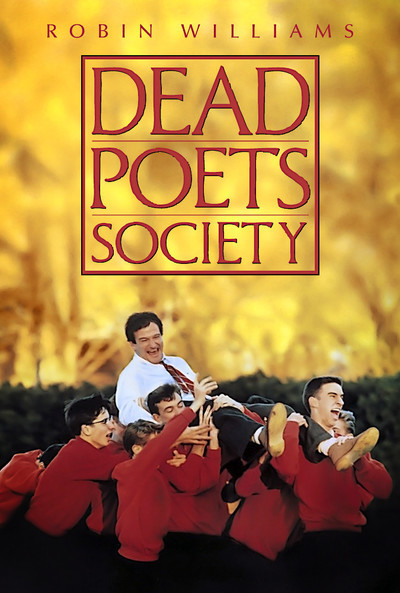
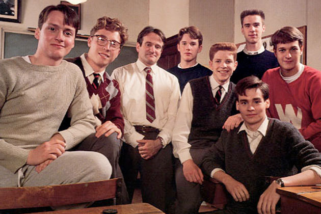

"O' Captain! My Captain!"
 Dead Poets Society is a 1989 American drama film starring Robin Williams. Set in 1959, at the fictional elite conservative Vermont boarding school Welton Academy, it tells the story of an English teacher who inspires his students through his teaching of poetry.
Good Will Hunting is a 1997 American drama film starring Robin Williams, Matt Damon, Ben Affleck. Written by Affleck and Damon (and with Damon in the title role), the film follows 20-year-old South Boston laborer Will Hunting, an unrecognized genius who, as part of a deferred prosecution agreement after assaulting a police officer, becomes a client of a therapist and studies advanced mathematics with a renowned professor. Through his therapy sessions, Will re-evaluates his relationships with his best friend, his girlfriend and himself, facing the significant task of confronting his past and thinking about his future.